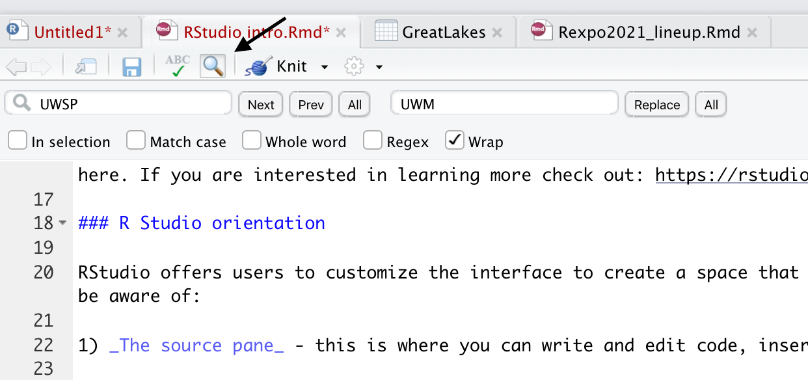
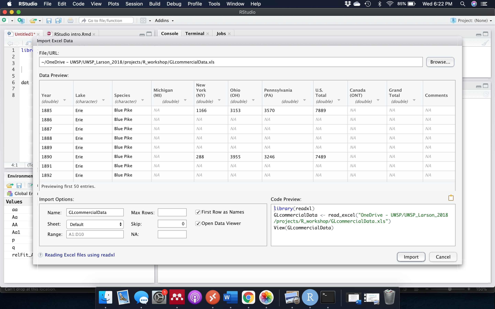
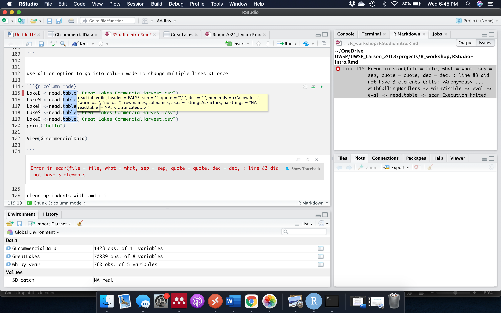

Making the most of RStudio
Peter Euclide
1/13/2020
R Studio
R studio has become a standard tool for R. It provides a user friendly interface to write and execute code by hybridinzing scripts with a point-and-click interface. There are already great resources going going over RStudio that go way beyond what I will discuss here. If you are interested in learning more check out: https://rstudio.com/wp-content/uploads/2016/01/rstudio-IDE-cheatsheet.pdf
R Studio orientation
RStudio offers users to customize the interface to create a space that works best for them. However, there are four basic windows to be aware of:
- The source pane - this is where you can write and edit code, insert text for reports, and generally get work done.

- The Console - this is your traditional R view. Here you can script just like you would in the original R, code is execulted by pressing enter and stored in your history.

- Plots, Packages, and Help - This is a viewer pane that provides quick access to viewing plots, installing packages, reading help pages.
Print a plot from the source or console pain, and then view or export the file from the viewer:

You can also view all of the packages you have installed, or install new packages.

- Environement - This is where you can preview what data you have loaded in to R and manage functions and or history.
View different datasets that you have loaded an check to make sure you know what variables or funcitons you have loaded.

Look back at your history and even move code that you wrote in the “console” back to your official script in the “Source” pain.

The layout of these panes is up to you can can be customized by clicking on the “Workspace Panes” icon with 4 little boxes ont the top bar.
RStudio secrets
RStudio has a ton of options and tricks tht make using R in R studio much easier than it used to be. Here are a few resrouces you might not know about:
1). RProjects - For every new project, you can make a RProject that links all of the files in a project folder together. This makes it easy to stay organized and find files.
2). RSessions - If you have a script running but want to keep working on a new script while the other runs, you can open new session. This allows you to get something else started while your model is running.
3). RMarkdown, Shiny Apps, and presentations - RStudio allows you to create different types of documents and us R code to do a lot more than just statistics. See Alex about getting started with RMarkdown and Shiny.
4). Easy help and cheatsheets - You may know that “?function()” pulls up a help page, but RStudio also makes it easy to access lots of pre-built cheathseets for different common packages and syntax under the “Help” tab.

5). Use the magnifying glass to search and replace to quickly re-name variables (or correct mistakes).

6). If you are working on a report (Check out Alex Latzka’s talk) you can spell check your work.

5). Hotkeys, hotkeys, hotkeys - R has about a million different key strokes you could learn to code more effieecently. A whole list is easily accessible under the “Keyboard Shotcuts” in “Help” (which you can acces using opt/alt+shift+k).
a few to keep in mind:
press tab when typing a file path to view all files in the present folder.

You can also important files using the “Import Dataset” button in the environment panel:


library(readxl)
GLcommercialData <- read_excel("GLcommercialData.xls",
sheet = "Ontario")
#View(GLcommercialData)
GLcommercialData <- read_excel("GLcommercialData.xls",
sheet = "Superior")
#View(GLcommercialData)Use cmd+alt+i to create a new chunk in a RMarkdown file
use comand + shift + c to comment code (or uncomment)
GreatLakes <- read.csv("Great_Lakes_CommercialHarvest.csv")
summary(GreatLakes$Year)## Min. 1st Qu. Median Mean 3rd Qu. Max.
## 1867 1919 1952 1949 1982 2008SD_catch = sd(GreatLakes$harvest)
wh_by_year <- GreatLakes %>% filter(Species == "Lake Whitefish") %>%
group_by(Lake, Year) %>%
summarize(Total_catch = sum(harvest, na.rm = T),
Mean_catch = mean(harvest, na.rm = T),
SD_catch = sd(harvest, na.rm = T))## `summarise()` has grouped output by 'Lake'. You can override using the `.groups` argument.head(wh_by_year)## # A tibble: 6 x 5
## # Groups: Lake [1]
## Lake Year Total_catch Mean_catch SD_catch
## <chr> <int> <int> <dbl> <dbl>
## 1 Erie 1867 971 971 NA
## 2 Erie 1868 901 901 NA
## 3 Erie 1869 211 211 NA
## 4 Erie 1870 291 291 NA
## 5 Erie 1871 65 65 NA
## 6 Erie 1872 185 185 NAuse alt/opt + - to name a new variable
lakeErie <- subset(GreatLakes, Lake == "Erie")use alt or option to go into column mode to change multiple lines at once

LakeE <-read.csv("Great_Lakes_CommercialHarvest.csv")
LakeM <-read.csv("Great_Lakes_CommercialHarvest.csv")
LakeH <-read.csv("Great_Lakes_CommercialHarvest.csv")
LakeS <-read.csv("Great_Lakes_CommercialHarvest.csv")
LakeO <-read.csv("Great_Lakes_CommercialHarvest.csv")
#View(GLcommercialData)clean up indents with cmd + i


Lakes <- unique(GreatLakes$Lake)
meanharvestSummary <- NULL
sdharvestSummary <- NULL
lakeSummary <- NULL
for(L in Lakes){
tmpL <- GreatLakes[GreatLakes$Lake == L,]
meanHarvest <- mean(tmpL$harvest, na.rm=T)
sdHarvest <- sd(tmpL$harvest, na.rm=T)
lake <- L
meanharvestSummary <- c(meanharvestSummary, meanHarvest)
sdharvestSummary <- c(sdharvestSummary, sdHarvest)
lakeSummary <- c(lakeSummary, lake)
}
cbind(lakeSummary, meanharvestSummary, sdharvestSummary)## lakeSummary meanharvestSummary sdharvestSummary
## [1,] "Erie" "1061.79957336301" "3178.34877549289"
## [2,] "Huron" "385.795211038961" "972.257012762037"
## [3,] "Michigan" "795.522544283414" "2695.01573208212"
## [4,] "Ontario" "127.171871968962" "290.512350895423"
## [5,] "Superior" "692.069774391155" "1945.41769433755"
## [6,] "Saint Clair" "60.7296905222437" "123.071460428638"